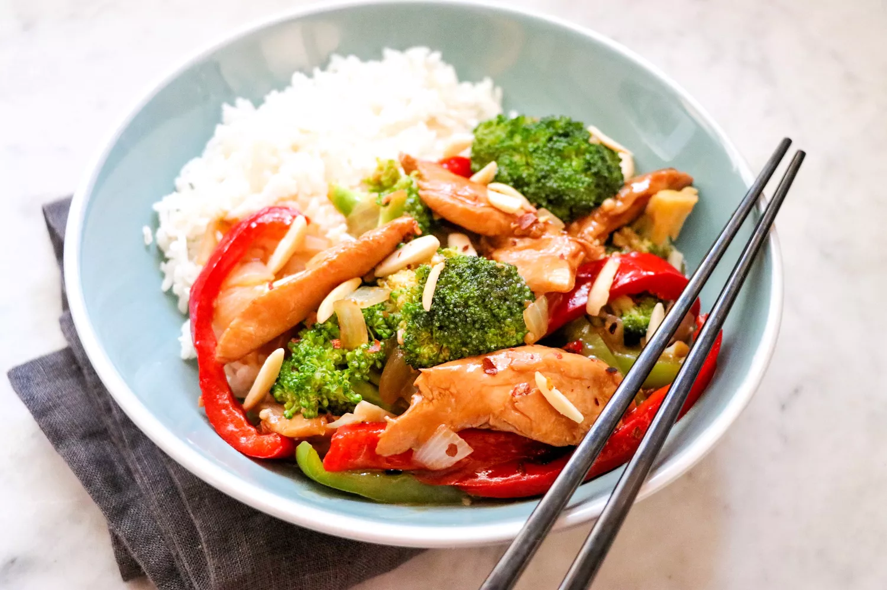

Chicken and Broccoli Stir-Fry

Description
Delicious, savory, and visually enticing chicken and broccoli stir-fry recipe! This is a double recipe because
leftovers are fantastic and the single recipe never seems to be enough! Halve the recipe if desired. Serve with hot
cooked brown or white rice.
Ingredients
- 6 tablespoons soy sauce
- 3 tablespoons cornstarch, divided
- 4 large skinless, boneless chicken breasts, cut into thin strips
- 2 cups boiling water, or more as needed
- 1 ½ tablespoons instant chicken bouillon granules
- ½ teaspoon ground ginger, or more to taste
- ¼ cup canola oil, divided
- 2 tablespoons sesame oil, divided
- 4 cups fresh broccoli florets, or more to taste
- 1 medium red bell pepper, cut into thin strips
- ½ green bell pepper, cut into thin strips
- 1 medium onion, diced
- 2 tablespoons minced garlic
- ½ teaspoon crushed red pepper, or more to taste
- 1 cup toasted slivered almonds
Steps
- Combine soy sauce and 1 tablespoon cornstarch in a glass bowl or zip-top bag. Add chicken; stir to coat. Remove
all air from baggie before sealing, or cover the bowl. Refrigerate at least 30 minutes.
- Combine boiling water and bouillon granules in another bowl, stir until dissolved. Add remaining cornstarch and
ginger; stir to combine.
- Heat half of the canola oil and 1 tablespoon sesame oil to 365 degrees F (185 degrees C) in an electric skillet
or in a heavy skillet over medium-high heat. Add broccoli, bell peppers, onion, and garlic. Stir-fry until
crisp-tender, 5 to 7 minutes. Remove from the skillet with a slotted spoon to a serving dish.
- Heat remaining canola oil and sesame oil in same skillet to 365 degrees F (185 degrees C) or medium-high heat.
Add chicken mixture and crushed red pepper. Stir-fry until chicken is no longer pink in the centers and juices run
clear, 7 to 10 minutes. Return vegetables to the skillet. Add bouillon mixture. Stir until thickened. Stir in
optional almonds.